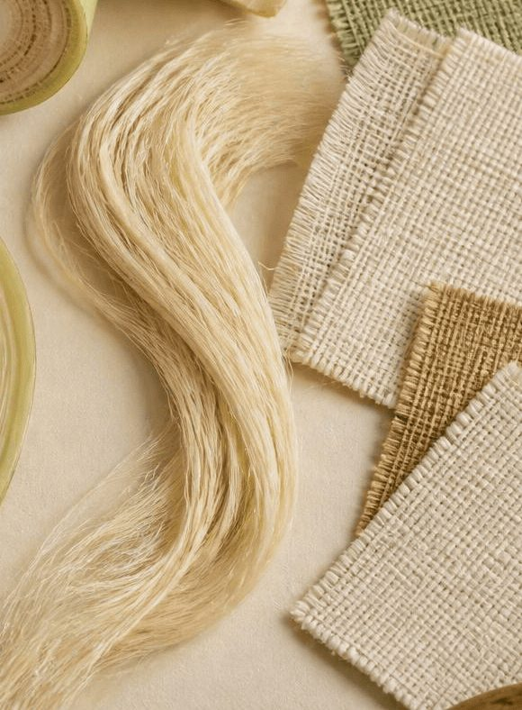

Product category
Raw banana fibre
Banana fibre in its extracted form, for customers who want to process the fibre further.
Contact our team for details about this product.
Home / Products
Browse our banana fibre categories and send an enquiry to our team.
Banana fibre in its extracted form, for customers who want to process the fibre further.
Contact our team for details about this product.

Banana fibre that has been cleaned and processed into a usable form.
Contact our team for details about this product.

Other banana fibre grades or formats can be discussed with our team. Contact us with your requirement.
Contact our team for details about this product.
Business enquiries